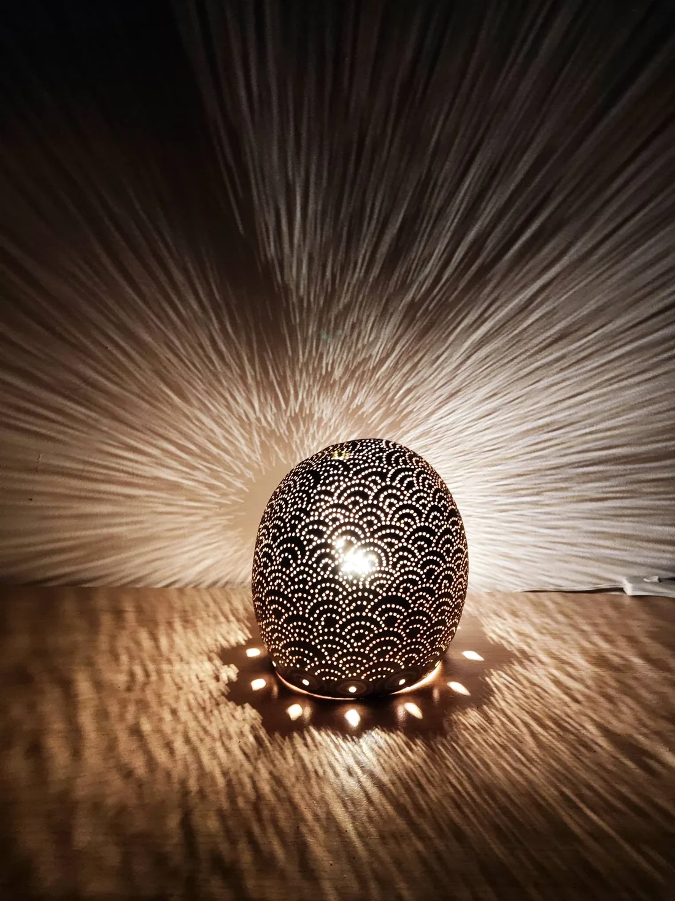
Artisan · Saint-Paul, La Réunion
MARC B
Lampes & abat-jour en calebasse
Des calebasses percées de mille points de lumière, qui dessinent leurs motifs jusque sur vos murs.
Saint-Paul 97460 · 0693 49 43 12
L'atelier
La calebasse, sculptée par la lumière
À Saint-Paul, MARC B transforme la calebasse en lampe : une coque naturelle, percée de centaines de petits trous qui composent un lion, un arbre, une madone ou des vagues d'écailles.
Création de lampes, abat-jour en calebasse. Sculptures de totems. Artisanat. Bijoux.— la présentation de MARC B sur sa page
Éteinte, la lampe garde la chaleur brune de la calebasse et ses couleurs peintes. Allumée, chaque point devient une étoile, et la pièce entière se met à rayonner.
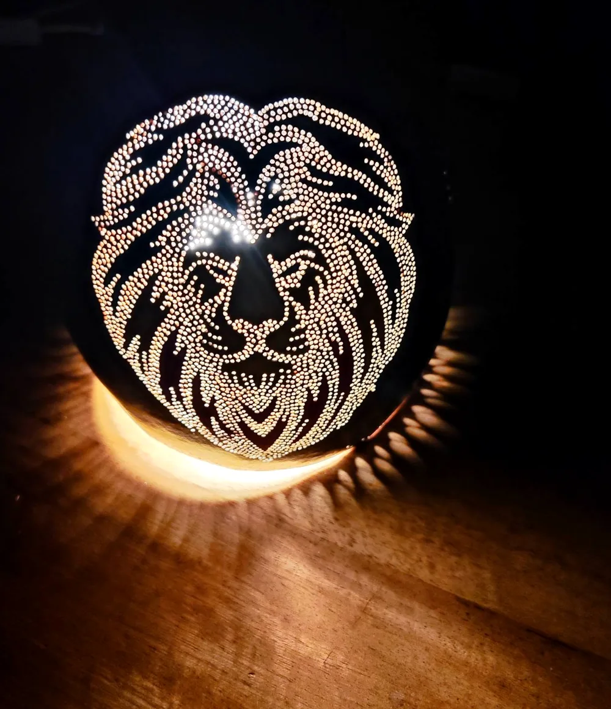
Sur le mur blanc
Ce que la lampe raconte au mur
On le demande souvent si mes lampes reflètent sur le mur, du coup j ai repris mes créations et les ai photographié près d un mur blanc. Voici le résultat
Publication de MARC B, 19 octobre 2026
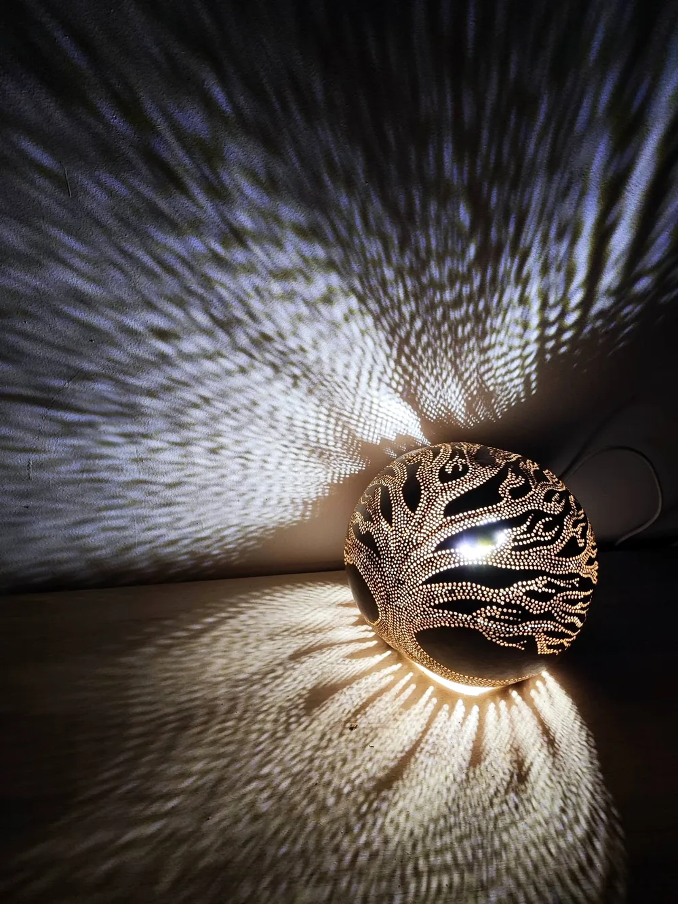
Les créations
Une galerie de lumières
Quelques pièces publiées sur la page de MARC B. Faites glisser pour les découvrir.
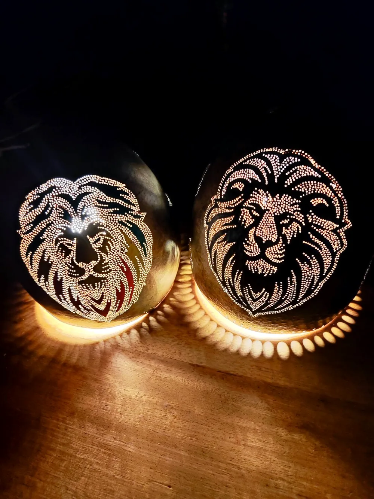
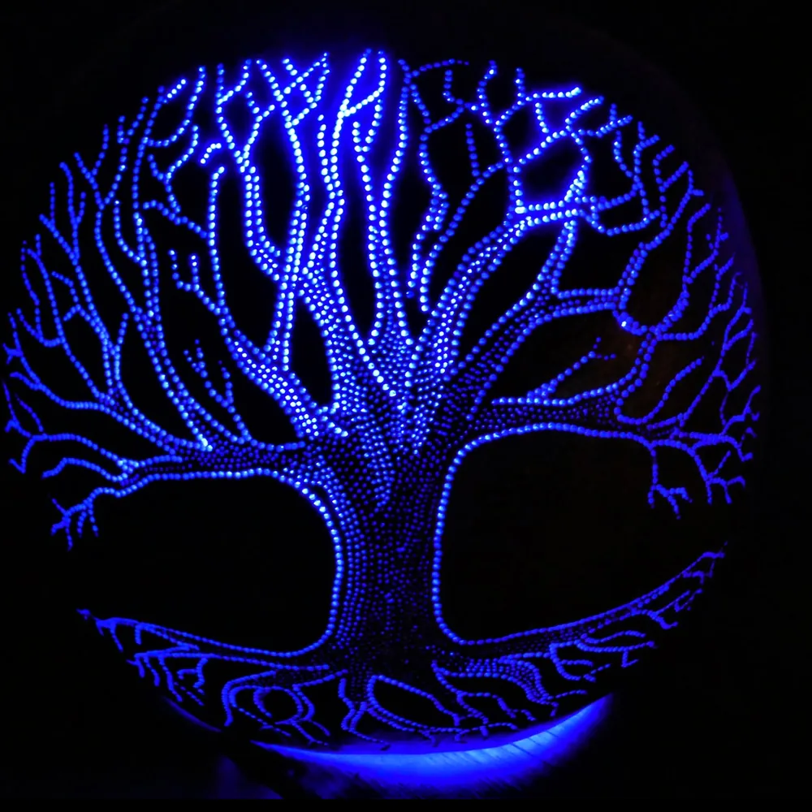
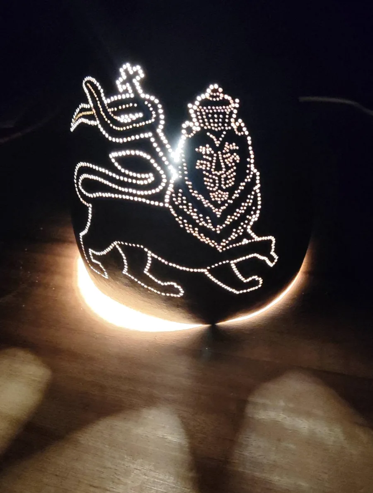
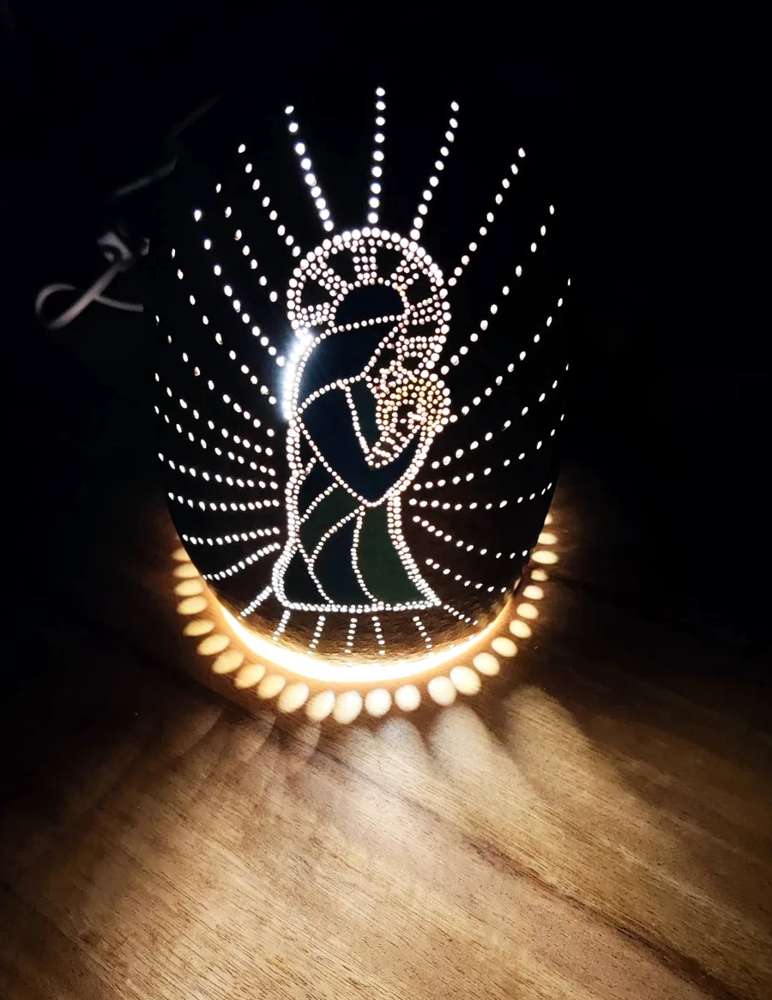
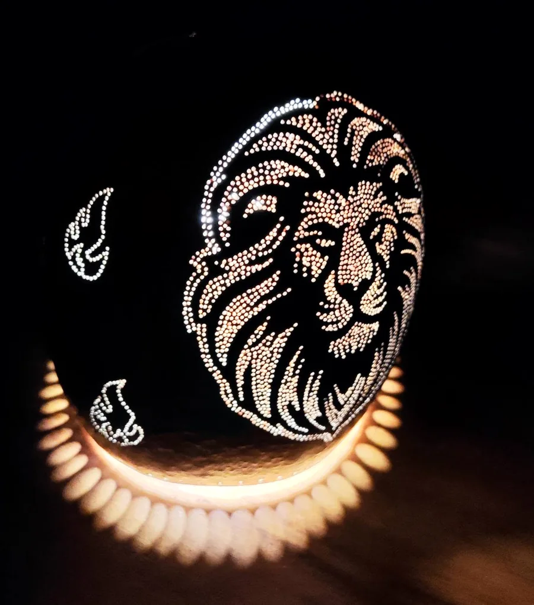
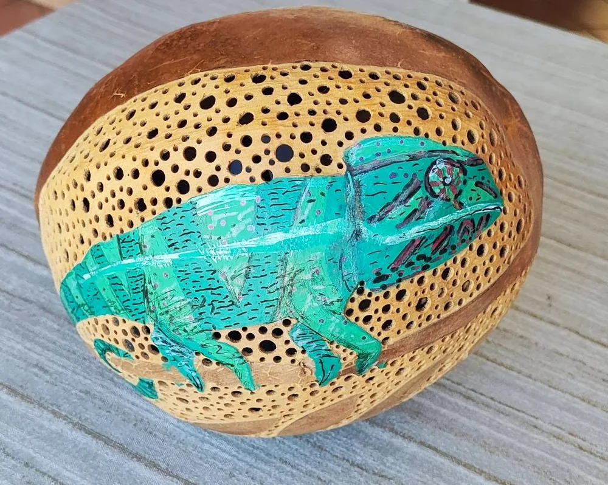
glissez
Le jour, la nuit
Deux vies pour une même lampe
Le jour, la calebasse montre sa matière et ses couleurs peintes. Le soir venu, la lumière révèle le dessin percé dans la coque. Essayez :
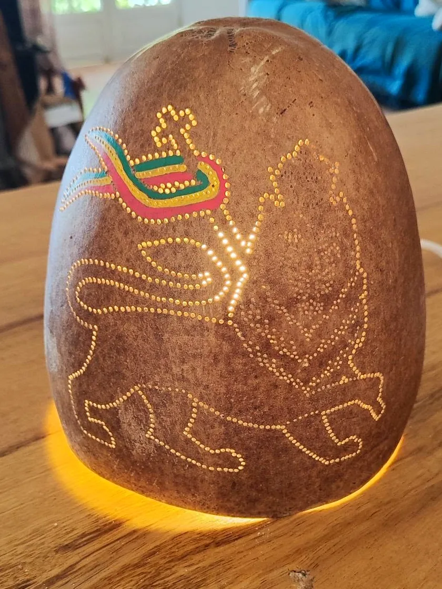
Le savoir-faire
Les mains de MARC B
Tout ce que présente sa page, en un coup d'œil.
Lampes
Abat-jour
Totems
Bijoux
Restauration
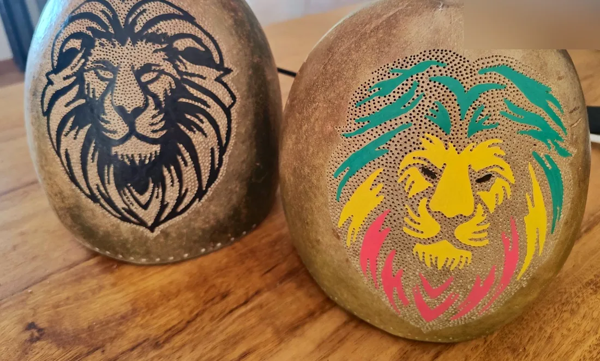
Offrir pour Noël
Offrez une lumière faite à Saint-Paul
Une lampe en calebasse
Une pièce unique, qui réchauffe un salon ou une chambre dès la tombée de la nuit.
Un motif qui lui ressemble
Lion, arbre, madone, caméléon : parlez-en avec MARC B pour trouver le motif qui fera briller les yeux.
Un bijou
Une petite création à glisser sous le sapin.
Écrivez dès maintenant pour préparer votre cadeau tranquillement.
Préparer mon cadeau sur WhatsAppContact
Parlons de votre lampe
Lieu · Saint-Paul, 97460, La Réunion
Téléphone · 0693 49 43 12
Réseaux · la page Facebook de MARC B